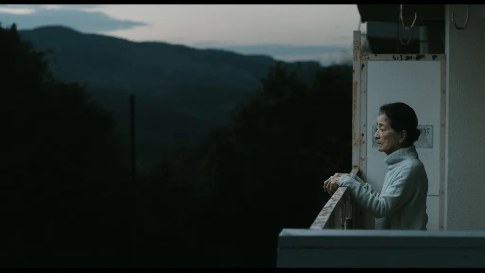
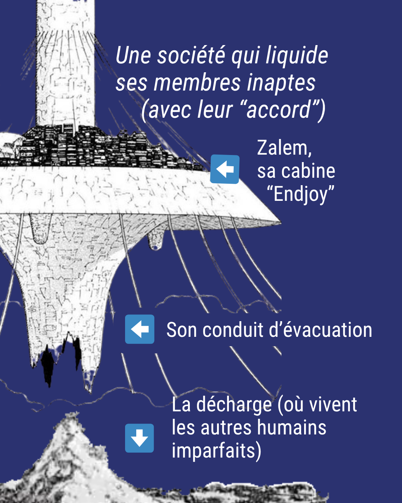

L’euthanasie et le suicide assisté ont été prévus depuis longtemps par la science-fiction. Petit tour d’horizon :


Économies laissées intactes donc, dont leurs enfants auront hérité après leur suicide assisté.« Nous sommes trop nombreux sur cette terre. Il n'y a plus d'argent pour payer les pensions des retraités. Pour les jeunes, il n'y a pas assez de travail. […] Car il y a aussi un aspect économique : nous pouvons faire gagner beaucoup d'argent. Un home correct coûte plus cher que le montant de nos pensions, donc nous devons puiser dans nos économies. »
Pour éviter de se réveiller dans un épisode de Black Mirror une fois la loi Falorni adoptée, on se mobilise : #StopLoiSuicideAssisté